SLAMによるナビゲーション¶
目次
RasPiMouse2019をナビゲーションRTC群では、下記の3つのシステムを構成することができます。
Slamによるナビゲーション地図作成システム
Montecalo localiationによる自己位置同定システム
Path Plannerを用いた経路生成とナビゲーションシステム
ここでは、それぞれのシステムの起動、実行、終了の手順について解説を行っていきます。
ナビゲーション地図生成の実行¶
概要¶
このシステムでは、RasPiMouse2019に搭載しているLiDARからの情報をベースに slamによるナビゲーション地図の作成を行うシステムについて述べます。
このシステムでは、RaspberryPiMouseRTC, RPLidarRTC, Mapper_MRPT, NavigationManagerの4つのRTCを使用します。 また各RTC間の接続は、下図のようになります。
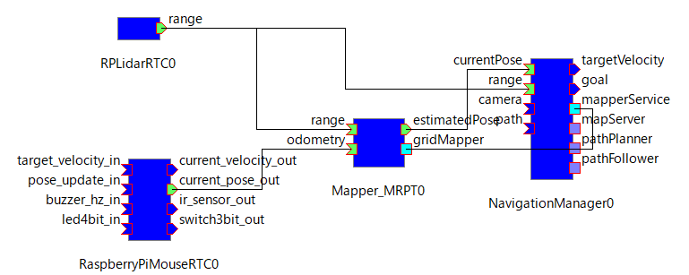RTCの起動¶
RTCの起動は、Webブラウザを利用する場合には、トップページの第3セクション "Mapper"の部分を使用します。 ナビゲーションRTCのシステムに対しては、 下図のように「Start」、「Connect」、「Activate」、「Deactivate」、「Stop」の5つのオペレーションがあります。
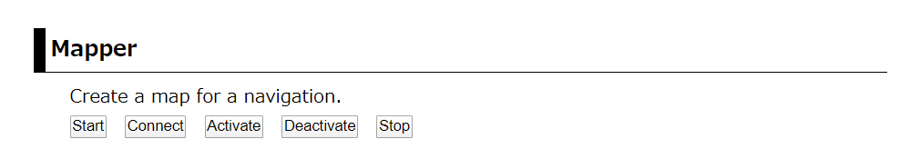ナビゲーション地図作成システムに必要なRTCの起動に「Start」を押下してください。 起動メッセージのページに遷移後、3秒後に自動でトップページに戻ります。
トップページに移行後、第2セクションの "RTC List" には、現在起動中のRTCの一覧が 表示されますが、RTCによって起動時間が異なりますので、全てのRTCが起動完了するまで しばらくお待ちください。
NavigationManagerはGUIを伴いますので、おそらく一番最後に起動すると思います。 全てのRTCが起動すると、下図のようなNavigationManagerの操作パネルが表示されます。
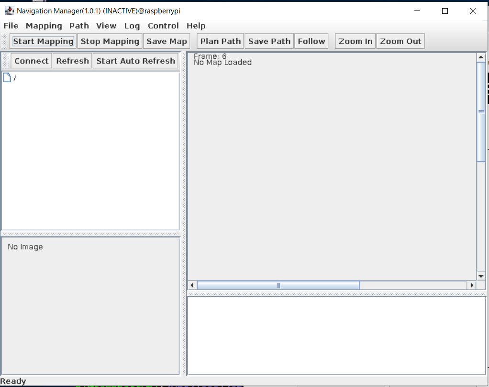また、第2セクションの「List」を押下すると下図のようにRTCのリストが表示されます。
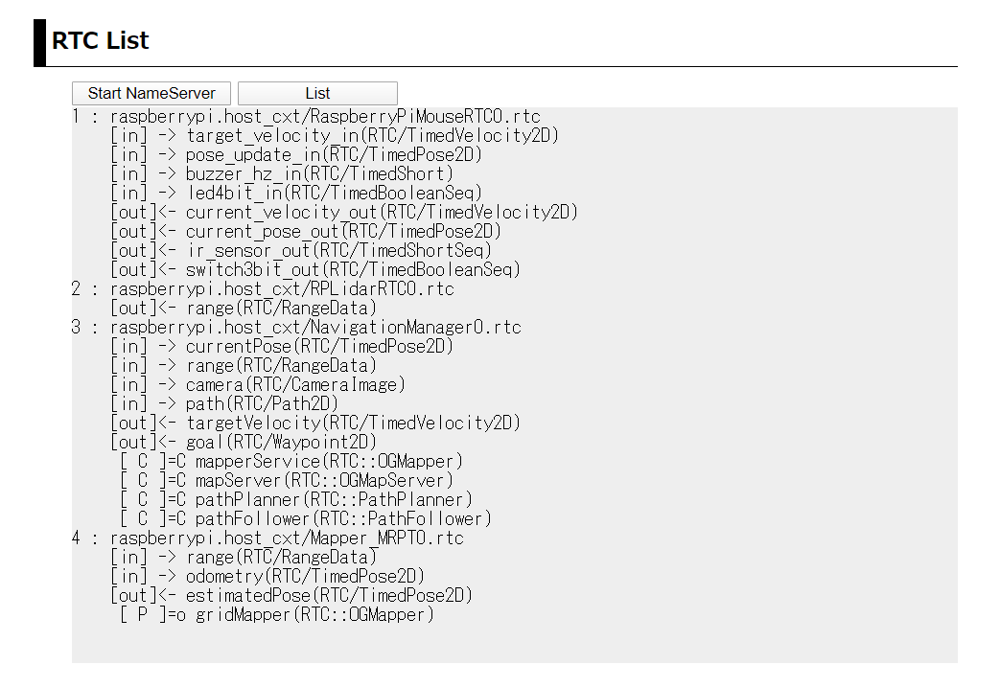Webブラウザを使用せずに、ターミナルでRasPiMouse2019にログインする場合には、 下記のコマンドを入力すると上記と同じ結果が得らえます。
$ /usr/local/openrtm/bin/mapper.sh start
ナビゲーション地図生成構築（ポートの接続）¶
必要なRTCの起動後は、ナビゲーション地図作成システムを構成するために、 各RTCのポートの接続を行います。 最終的なシステム構成は、概要で表示した図の通りになります。 この構成を外部のRT System Editorを使って手動で接続しても良いのですが、 第3セクションの「Connect」ボタンを押下することで必要な接続を行うことができます。
ポートの接続後、第2セクションの「List」を押下すると下図のようなリストが得られます。
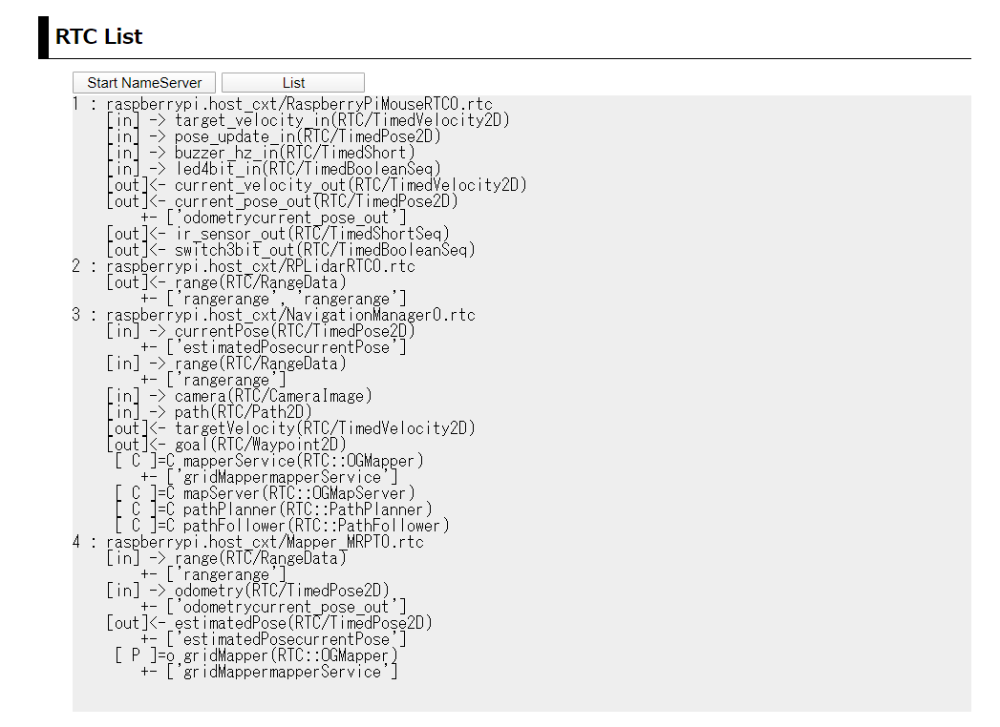また、rtcmd を用いて graphコマンドを実行すると下図のようなシステム構成図を得ることができます。
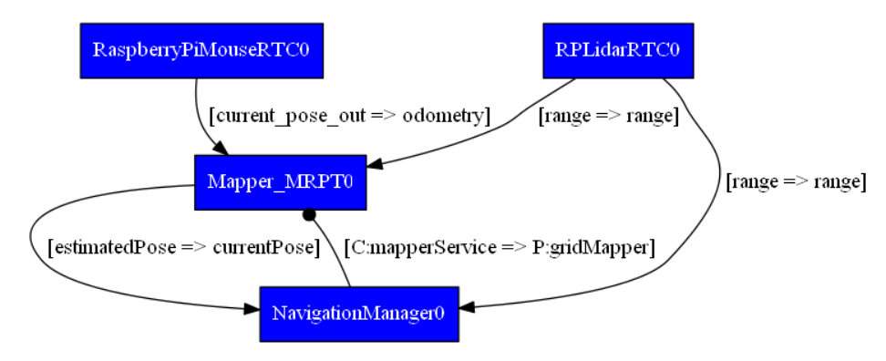また、Webブラウザを使用せずに、ターミナルでRasPiMouse2019にログインする場合には、 下記のコマンドを入力すると上記と同じ結果が得らえます。
$ /usr/local/openrtm/bin/mapper.sh connect
ナビゲーション地図生成の実行¶
RTCのポート接続が完了後、ナビゲーション地図作成を行います。 地図生成に係る4つのRTCをアクティベートしてください。
RTCのアクティベート¶
アクティベートの方法は、 Webブラウザ、ターミナルでログイン後にコマンド入力、 クライアントPC上のopenrtp、rtcmd等の外部ツールのいづれかを使用してください。
ここでは、Webブラウザとターミナルでログイン後のコマンドライン入力の2つの方法を紹介します。
Webブラウザでは、第3セクションの「Activation」ボタンを押下することで全てのRTCをアクティベートすることができます。 ターミナルからのコマンドライン入力では、下記のコマンドで同様に全てのRTCをアクティベートすることが可能です。
$ /usr/local/openrtm/mapper.sh activate
すべてのRTCを有効化すると、下図のようにNavigationManagerの右側のペインに座標軸のみが表示された 空の地図が表示されます。
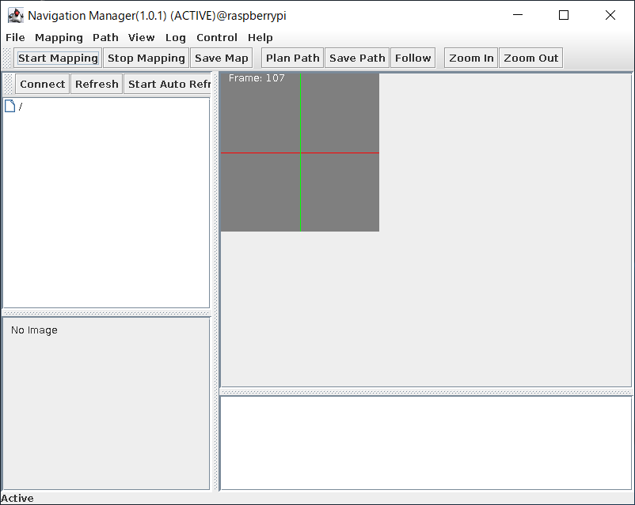現在の設定では、10m x 10mの地図を作成することができます。 より広い地図を作成する必要がある場合には、/usr/local/openrtm/etc/Mapper_MRPT.confのパラメータを 変更してください。
ナビゲーション地図の作成¶
システムのRTCのアクティベーション後は、 ナビゲーション地図を作成するために NavigationManagerの上部にある 「Start Mapping」ボタンを押下してください。 これによって、下図のようにRasPiMouse2019のLidarの情報を元にナビゲーション地図作成が開始されます。
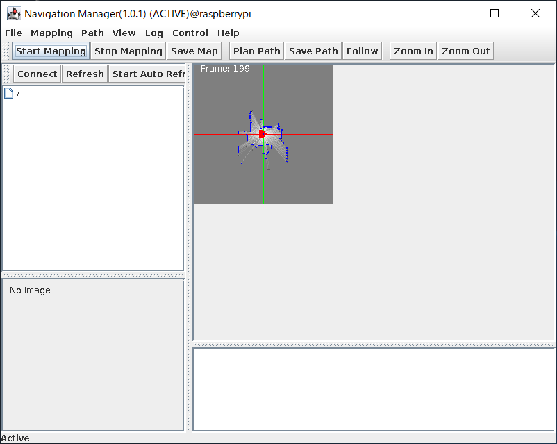上図のようにナビゲーション地図作成が開始されれば、NavigationManagerのJoystickパネルを用いて 手動でRasPiMouse2019を移動させてください。
Joystickパネルによる操作¶
NavigationManagerのJoystickは、メニューの [Control] -> [Start Control]を選択することで、 下図のような接続ダイアログが表示されますので、「OK」ボタンで選択してください。

正常にポート接続が完了すれば下図のような仮想Joystickが表示されますので、 RasPiMouse2019を移動させ、ナビゲーション地図を完成させてください。

しばらくRasPiMouse2019を移動させると下図のようなナビゲーション地図が得られます。
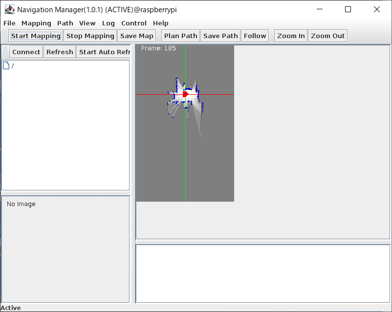ナビゲーション地図の保存¶
最後に作成したナビゲーション地図を保存します。 NavigationManagerの「Save Mapping」ボタンを押下してください。 ファイル名選択ダイアログが表示されますので、/usr/local/openrtm/testMap.png と いう名前で保存してください。
ここで保存したファイル名(testMap)は、 自己位置同定システムや経路生成システムで使用するMapServerのデフォルト値になっています。
ナビゲーション地図生成システムの終了¶
ナビゲーション地図の保存が終了後は、RTCの終了を行います。 RTCの終了はWebブラウザの第3セクションの「Stop」ボタンを押下するか、 ターミナルでログイン後に下記のコマンド入力を行うことで行ってください。
$ /usr/local/openrtm/bin/mapper.sh stop
上記の例では、「Disconnct」と「Deactivate」を使用しませんでしたが、 起動中のRTCをそのまま使い自己位置同定システム等を実行する場合には 適宜利用することができます。
ナビゲーション（自己位置同定）の実行¶
概要¶
このシステムでは、前述のナビゲーション地図作成システムにより生成した 地図とRasPiMouse2019に搭載したLiDARの情報をもとにMontecarlo localization を行うシステムです。
NavigationManagerに搭載されたJoystickでRasPiMouse2019を操作しながら、 自己位置同定を行います。
このシステムでは、RaspberryPiMouseRTC, RPLidarRTC, Localization_MRPT, MapServer, NavigationManagerの5つのRTCを使用します。 また、各RTC間の接続は、下図のようになります。

RTCの起動¶
RTCの起動は、Webブラウザを利用する場合には、トップページの第4セクション "Localiation"の部分を使用します。 ナビゲーションRTCのシステムに対しては、 下図のように「Start」、「Connect」、「Activate」、「Deactivate」、「Stop」の5つのオペレーションがあります。

ナビゲーション(自己位置同定)システムに必要なRTCの起動に「Start」を押下してください。 起動メッセージのページに遷移後、3秒後に自動でトップページに戻ります。
トップページに移行後、第2セクションの "RTC List" には、現在起動中のRTCの一覧が 表示されますが、RTCによって起動時間が異なりますので、全てのRTCが起動完了するまで しばらくお待ちください。
NavigationManagerはGUIを伴いますので、おそらく一番最後に起動すると思います。 全てのRTCが起動すると、ナビゲーション地図作成システムと同様の NavigationManagerの操作パネルが表示されます。
また、第2セクションの「List」を押下すると下図のようにRTCのリストが表示されます。

Webブラウザを使用せずに、ターミナルでRasPiMouse2019にログインする場合には、 下記のコマンドを入力すると上記と同じ結果が得らえます。
$ /usr/local/openrtm/bin/location.sh start
ナビゲーション（自己位置同定）構築（ポートの接続）¶
必要なRTCの起動後は、ナビゲーション（自己位置同定）システムを構成するために、 各RTCのポートの接続を行います。 最終的なシステム構成は、概要で表示した図の通りになります。 この構成を外部のRT System Editorを使って手動で接続しても良いのですが、 第4セクションの「Connect」ボタンを押下することで必要な接続を行うことができます。
ポートの接続後、第2セクションの「List」を押下すると下図のようなリストが得られます。

また、rtcmdを用いて graphコマンドを実行すると下図のようなシステム構成図を得ることができます。

また、Webブラウザを使用せずに、ターミナルでRasPiMouse2019にログインする場合には、 下記のコマンドを入力すると上記と同じ結果が得らえます。
$ /usr/local/openrtm/bin/location.sh connect
ナビゲーション（自己位置同定）の実行¶
RTCのポート接続が完了後、ナビゲーション（自己位置同定）を行います。 本システムに係る5つのRTCをアクティベートしてください。
RTCのアクティベート¶
RTCのアクティベートの方法は、 Webブラウザ、ターミナルでログイン後にコマンド入力、 クライアントPC上のopenrtp、rtcmd等の外部ツールのいづれかを使用してください。
ここでは、Webブラウザとターミナルでログイン後のコマンドライン入力の2つの方法を紹介します。
Webブラウザでは、第4セクションの「Activation」ボタンを押下することで全てのRTCをアクティベートすることができます。 ターミナルからのコマンドライン入力では、下記のコマンドで同様に全てのRTCをアクティベートすることが可能です。
$ /usr/local/openrtm/localize.sh activate
すべてのRTCを有効化すると、下図のようにNavigationManagerの右側のペインにナビゲーション地図が表示され、 現在のRasPiMouse2019の位置が原点付近で探索され、表示されます。

現在のデフォルト設定では、/usr/local/openrtm/testMap.yamlを使用しますが、 他のナビゲーション地図を利用する場合には、 /usr/local/openrtm/etc/MapServer.confのパラメータを適宜修正してください。
Joystickパネルによる操作¶
ナビゲーション（自己位置同定）システムでは、NavigationManagerのJoystickパネルを用いて 手動でRasPiMouse2019を移動させることを想定しています。
NavigationManagerのJoystickは、メニューの [Control] -> [Start Control]を選択することで、 下図のような接続ダイアログが表示されますので、「OK」ボタンで選択してください。
正常にポート接続が完了すれば下図のような仮想Joystickが表示されますので、 RasPiMouse2019を移動させ、ナビゲーション地図上でRasPiMouse2019の自己位置が 推定されることを確認してください。
この自己位置推定では、オドメトリとLiDARの情報を使ってMontecarlo Localization を行っています。 そのため、車輪のスリップによりオドメトリ値が大きく異なる場合には、 正しく自己位置を推定することはできません。
車輪のスリップを極力抑えるように車輪のメンテナンスをしてください。
ナビゲーション（自己位置同定）システムの終了¶
ナビゲーション（自己位置同定）システムの終了は、 Webブラウザの第3セクションの「Stop」ボタンを押下するか、 ターミナルでログイン後に下記のコマンド入力を行うことで行ってください。
$ /usr/local/openrtm/bin/location.sh stop
上記の例では、「Disconnct」と「Deactivate」を使用しませんでしたが、 起動中のRTCをそのまま使い経路計画システム等を実行する場合には適宜利用する ことができます。
ナビゲーション（経路計画）の実行¶
概要¶
このシステムでは、前述のナビゲーション地図作成システムにより生成した 地図とRasPiMouse2019に搭載したLiDARの情報をもとにMontecarlo localization を行い、ナビゲーション地図上で指定した目的地までのナビゲーションを行うシステムです。
目的地は、NavigationManagerに表示されたナビゲーション地図上のポイントをクリックすることで、 位置と姿勢を入力することができます。
このシステムでは、RaspberryPiMouseRTC, RPLidarRTC, Localization_MRPT, PathPlanner_MRPT, SimplePathFollower, MapServer, NavigationManagerの7つのRTCを使用します。 また、各RTC間の接続は、下図のようになります。
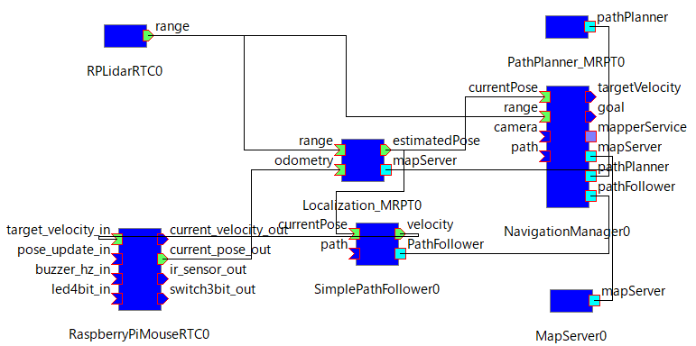RTCの起動¶
RTCの起動は、Webブラウザを利用する場合には、トップページの第5セクション "PathPlan"の部分を使用します。 ナビゲーションRTCのシステムに対しては、 下図のように「Start」、「Connect」、「Activate」、「Deactivate」、「Stop」の5つのオペレーションがあります。
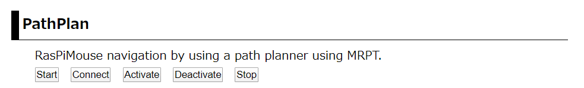ナビゲーション（経路計画）システムに必要なRTCの起動に「Start」を押下してください。 起動メッセージのページに遷移後、3秒後に自動でトップページに戻ります。
トップページに移行後、第2セクションの "RTC List" には、現在起動中のRTCの一覧が 表示されますが、RTCによって起動時間が異なりますので、全てのRTCが起動完了するまで しばらくお待ちください。
NavigationManagerはGUIを伴いますので、おそらく一番最後に起動すると思います。 全てのRTCが起動すると、ナビゲーション地図作成システムと同様の NavigationManagerの操作パネルが表示されます。
また、第2セクションの「List」を押下すると下図のようにRTCのリストが表示されます。
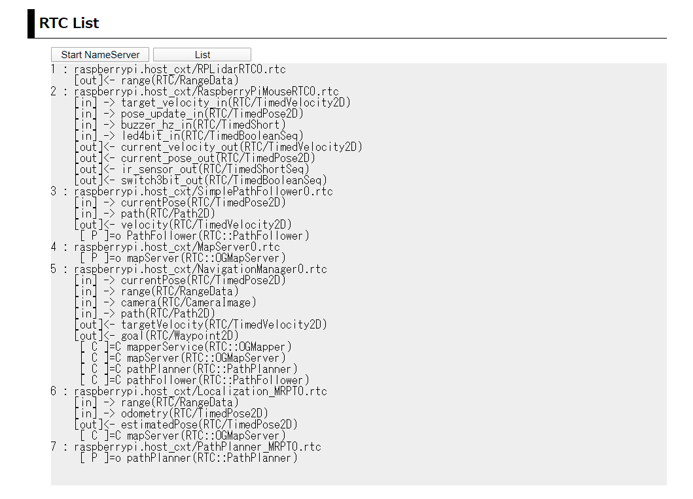Webブラウザを使用せずに、ターミナルでRasPiMouse2019にログインする場合には、 下記のコマンドを入力すると上記と同じ結果が得らえます。
$ /usr/local/openrtm/bin/path_plan.sh start
ナビゲーション（経路計画）構築（ポートの接続）¶
必要なRTCの起動後は、ナビゲーション（経路計画）システムを構成するために、 各RTCのポートの接続を行います。 最終的なシステム構成は、概要で表示した図の通りになります。 この構成を外部のRT System Editorを使って手動で接続しても良いのですが、 第4セクションの「Connect」ボタンを押下することで必要な接続を行うことができます。
ポートの接続後、第2セクションの「List」を押下すると下図のようなリストが得られます。
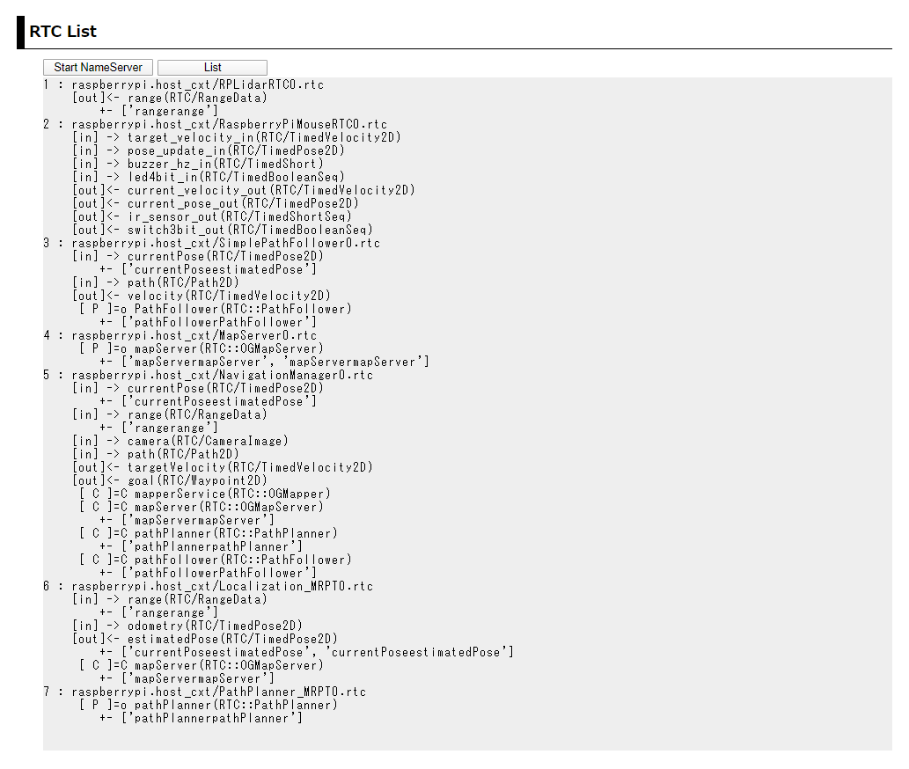また、rtcmdを用いて graphコマンドを実行すると下図のようなシステム構成図を得ることができます。
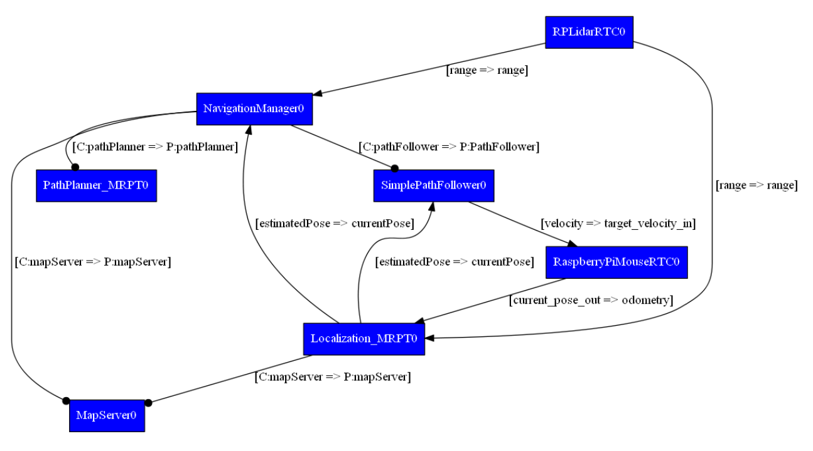また、Webブラウザを使用せずに、ターミナルでRasPiMouse2019にログインする場合には、 下記のコマンドを入力すると上記と同じ結果が得らえます。
$ /usr/local/openrtm/bin/path_plan.sh connect
ナビゲーション（経路計画）の実行¶
RTCのポート接続が完了後、ナビゲーション（自己位置同定）を行います。 本システムに係る5つのRTCをアクティベートしてください。
RTCのアクティベート¶
RTCのアクティベートの方法は、 Webブラウザ、ターミナルでログイン後にコマンド入力、 クライアントPC上のopenrtp、rtcmd等の外部ツールのいづれかを使用してください。
ここでは、Webブラウザとターミナルでログイン後のコマンドライン入力の2つの方法を紹介します。
Webブラウザでは、第5セクションの「Activation」ボタンを押下することで全てのRTCをアクティベートすることができます。 ターミナルからのコマンドライン入力では、下記のコマンドで同様に全てのRTCをアクティベートすることが可能です。
$ /usr/local/openrtm/path_plan.sh activate
すべてのRTCを有効化すると、下図のようにNavigationManagerの右側のペインにナビゲーション地図が表示され、 現在のRasPiMouse2019の位置が原点付近で探索され、表示されます。
現在のデフォルト設定では、/usr/local/openrtm/testMap.yamlを使用しますが、 他のナビゲーション地図を利用する場合には、 /usr/local/openrtm/etc/MapServer.confのパラメータを適宜修正してください。
移動目標位置の入力¶
次に、NavigationManagerのナビゲーション地図上をマウスでクリックすることで、 移動目標の入力を行います。
ナビゲーション地図の任意の位置でクリックすると、下のようなダイアログが表示され、 目標座標と姿勢を入力することができます。
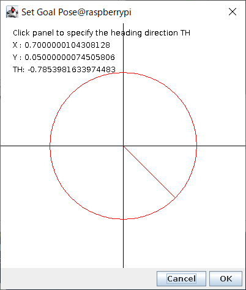目標位置は、このダイアログの上部に表示されており、目標姿勢はダイアログ内に表示された 円の円周をクリックすることで指定することができます。
目標姿勢を確認後、「OK」ボタンをクリックして移動目標の位置と姿勢を決定してください。 すると、下図に示すようにナビゲーション地図上に目標位置と姿勢が表示されます。
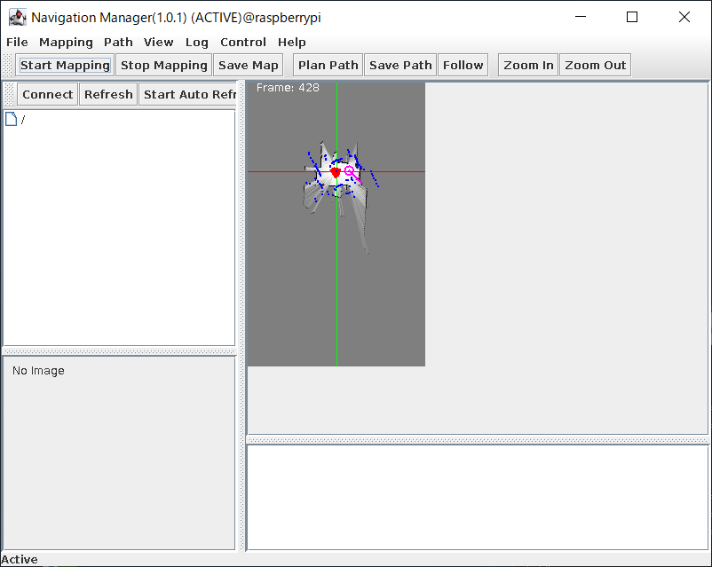移動経路の生成¶
次に、目標位置までの経路生成を行います。 経路生成は、NavigationManagerのGUIパネルの上部の「Plan Path」ボタンを押下することで 生成することができます。
経路生成の結果（成功したか否か）は、NavigationManagerの右下にあるメッセージパネルに表示されます。
RasPiMouse2019のナビゲーション¶
経路計画が正常に終了すれば、「Follow」ボタンを押下することで、 RasPiMouse2019を移動させることができます。
生成さえた経路に沿ったナビゲーションは、 SimplePathFollowerコンポーネントがNavigationManager経由で 得られた動作経路とLocalization_MRPTによって推定された自己位置を もとに動作命令を生成しています。
ナビゲーション終了後は、下図のようになります。
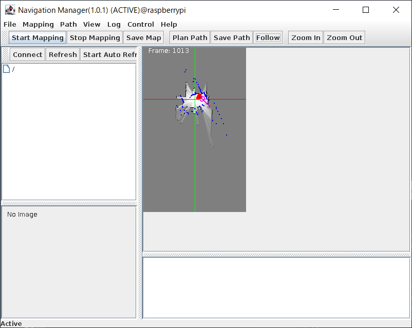この時Localization_MRPTの自己位置推定によっては正しい動作をすることができません。 ナビゲーション（自己位置推定）システムの部分にも記載していますが、 推定精度はオドメトリの精度に大きく依存しており、車輪のスリップが発生すると 正しいナビゲーションを行うことができません。
そのため、システム動作のまえに車輪等のハードウェアの管理を適切に行うようにしてください。
ナビゲーション（経路計画）システムの終了¶
ナビゲーション（経路計画）システムの終了は、 Webブラウザの第3セクションの「Stop」ボタンを押下するか、 ターミナルでログイン後に下記のコマンド入力を行うことで行ってください。